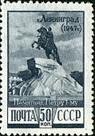

Почтовые марки
Российская империя

СССР, 1948 год
СССР, 1948 год
СССР, 1953 год
СССР, 1989 год
СССР, 1989 год
СССР, 1989 год:
275 лет Гангутскому сражению
Россия, 1998 год:
300 лет Таганрогу
Россия, 2009 год: 300 лет победы в полтавской битве
Россия, 2003 год: 300 лет Петрозаводску
Россия, 2006 год:
Марка Российской Империи, 1916 г.
Почта России, 1993 г.
Почта России, 1996 г. Памятник Петру I в Туле.
Марка России 1997 г.
Марка России 1997 г.
Марка России 1997 г.
Марка России 1997 г.
Марка России 1997 г.

Почтовый блок России 1997 г.
Марка России 2001 г.
Почтовый блок России, 2003 г.
Марка России, 2009 г.
Марка России 2012 г. Памятник Петру I.
Почта России. 2018 г.
Почта СССР, 1974 г.
Марка России, 1904 г. № 58.
Почтовая марка СССР, 1978 г. Переславль-Залесский.

Почта СССР, 1925 г.
Почта России, 2019 г. 300 лет первому российскому курорту «Марциальные Воды».
Почта России, 2015 г.
Почтовая карточка с оригинальной маркой, 2014 г.
Почта СССР, 1971 г. Ботик Петра I.
Почтовый блок России 2022 года — 350 лет со дня рождения Петра I (1672—1725)